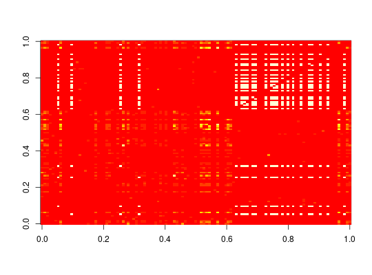

Provides the generic function affinity and the S4 methods
to compute and return a similarity matrix with the affinities between items
for a set of transactions.
affinity(x)
itemMatrix
or transactions.Affinity between the two items \(i\) and \(j\) is defined by Aggarwal et al. (2002) as $$A(i,j) = \frac{sup(\{i,j\})}{sup(\{i\}) + sup(\{j\}) - sup(\{i,j\})},$$ where \(sup(.)\) is the support measure. This means that affinity is the Jaccard similarity between items.
returns an object of class ar_similarity which represents
the affinities between items in x.
dissimilarity,
ar_similarity-class,
itemMatrix-class
Charu C. Aggarwal, Cecilia Procopiuc, and Philip S. Yu (2002) Finding localized associations in market basket data, IEEE Trans. on Knowledge and Data Engineering, 14(1):51--62.
#> transactions in sparse format with #> 500 transactions (rows) and #> 115 items (columns)